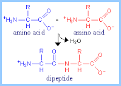
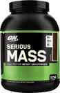

< < < Back
Why You Need To Be Suspicious Of Supplements – Return Of Kings
There is a phenomenon that happens to almost every person who seriously exercises: after you have been lifting and working out for a year or two, your massive “newbie gains” decline, and progress is slower. Seeking a return to your early successes, you look into a variety of supplements, all of which promise to give you an edge: increasing strength and mass, decreasing recovery time, and more.
I have come here today to tell you that a large amount of supplements are bullshit, contra to the sales pitches of the various vendors of snake oil. But to throw the (largely unregulated) supplement market a bone, I will briefly discuss some supplements that actually do work, and I myself have used on occasion:
Supplements That Actually Work
Creatine
The first of my chosen supplements is creatine. As we all remember from biology class, creatine (more accurately, creatine phosphate) is a compound within muscle fibers that exists to contain and store phosphate molecules. In strenuous muscular activity, freely-accessed adenosine triphosphate (ATP, a compound created via cellular respiration, and necessary for muscular function) is quickly depleted, and the creatine releases its phosphate, binding it to adenosine monophosphate and adenosine diphosphate to continue the muscular labor.
Creatine will not necessarily make you bigger or lose weight just by itself, but it will stave off muscular exhaustion, allowing you to do an extra set, or run that extra 200 meters or what have you. In other words, creatine will only have any benefit for you if you are already doing a regular program of exercise—it won’t do you any good sitting on your couch playing video games
Protein

The molecular structure of protein
Protein powder is another useful supplement—the numerous bodily structures and tissues that are made of protein are well known to us all, so the usefulness of dietary protein is pretty obvious, but what may not be obvious to you is that whey-derived protein mixes are fairly high in calcium as well, giving you an added supplement.
Again, you oughta be exercising before using protein powder, because extra nutrients and calories will not do you any good sitting on your ass. Personally speaking, I prefer to get my protein by eating a steak for dinner, with a side order of another steak, but if you, for some reason, have difficulty in getting enough protein in your regular diet, protein powder is a welcome supplement.
Calcium
And finally, calcium supplements. These are largely for older people, but they’re certainly effective if you are arthritic or rickety. Personally, I prefer a much cheaper calcium supplement (that also supplements your mental fortitude), which will be discussed shortly.
While there are other supplements that are effective (multi-vitamins and fish oil, to name two off the top of my head), the number of useful supplements is greatly outweighed by the amount of useless crap you can find in health food stores.
A Few Ineffective Supplements
BCAAs
One I see advertised often is branched chain amino acids: BCAAs do, in fact, increase muscular cell genesis. The problem is, everything you eat that has protein in it, will, by definition, have BCAAs as well. Skip this stuff and drink a protein shake instead. Or better yet, have a sandwich.
Mass Gainers

Mass gainers are actually something I admire, in that I admire a good scam when I see it: take a basic old protein powder, fill it full of sugar and fat, and jack up the price by 100 percent. But I suppose if you want to, in essence, drink a protein shake mixed with candy bars, go right ahead.
But if you seek to gain weight, why don’t you make a protein shake with yogurt, fruit, and oats instead?
And then there’s glutamine, which has been shown in testing to be ineffective when taken orally.
More Snake Oil
There’s a lot more out there, such as testosterone boosters. Being that I lift weights, eat red meat and leafy green vegetables, get a good night’s sleep, masturbate only twice a week at most, and practice power poses and alpha male body language, I don’t need testosterone boosting.
Which is a good thing, because studies have shown many testosterone boosters, such as Tribulis terrestris, Maca, Tongkat Ali, and others may have a benefit in increasing libido, but they do not increase testosterone levels.
Even Zinc, Vitamin D, and Magnesium, all of which have been shown to increase testosterone levels in irregularly low-T men, do not have any benefit of increasing testosterone beyond a standard level.
I could go on and on about the myriad of dubious supplements there are on the market, but I think you got the idea. Instead, let me suggest some “off market supplements” I use, and have worked to my satisfaction
Home-Made Supplements
As alluded to earlier in this article, there exists a cheaper way to supplement calcium levels than the pills purchased in stores: consumption of eggshells, which have been shown in studies to be just as effective as the pills (which are largely made of bonemeal or ground up seasells). You can grind them up if you want, but if you desire to train your mental fortitude, just hork the shells into your mouth, chew them up, and eat them. Do the same for fish and chicken bones.
Speaking of bones, the marrow found inside is one of the most nutritious things you can eat, when compared to the effort it takes to get it (almost none). Prehistoric hominids (AKA the ancestors of you and me) evidently cracked long bones open for marrow. And why? Because marrow is loaded with calories, but also with fatty acids. And fatty acids insulate the axons of nervous cells-in layman’s terms, they’re good for the brain.
And of course, my two main supplements that I apply in the gym: chalk to my hands, and the Russian Army Choir in my ears (Communism excelled at just two things: weightlifting and music. Use this information to your advantage). Those two have done more for me than any ingestible substance.
So if there is a conclusion to be drawn, it is that even the best of supplements are just that: SUPPLEMENTS, they are supposed to add a little bit to a balanced diet and lifestyle. Ultimately, the best things you can do for your health is to get regular strenuous exercise, eat a good diet, and get regular sleep. Leave the snake oil salesmen in the Wild West where they belong.
Read More: Supplements Don’t Build Muscle